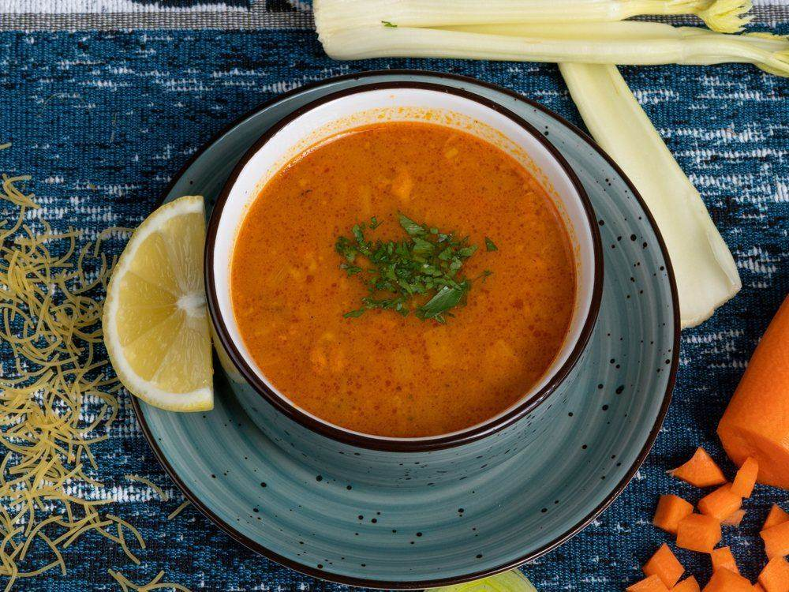
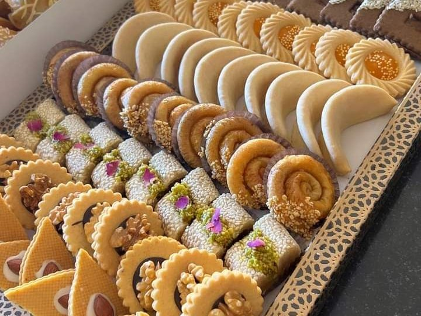
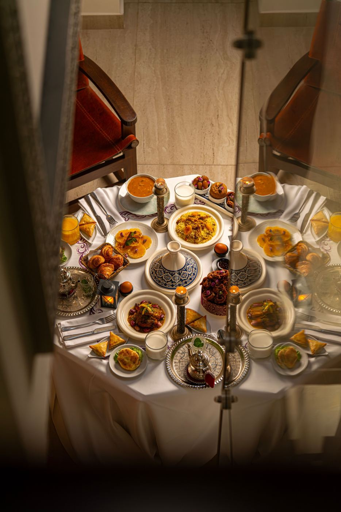

Many travellers wonder whether they should avoid Morocco during Ramadan. The short answer: no, you can travel very well during the holy month. Hotels, riads and tours work normally, the desert is as beautiful as ever, and you get to see a side of Moroccan life that most visitors miss: quiet days, warm evenings, family meals at sunset and streets that come alive late into the night.
In this guide we explain the expected dates for Ramadan 2027, what changes for visitors, how to behave respectfully, what to eat at ftour (the meal that breaks the fast) and our tips to enjoy your trip.

What is Ramadan?
Ramadan is the ninth month of the Islamic calendar, when Muslims fast from dawn to sunset: no food, no drink and no smoking during the day. It is a time of prayer, generosity, family and community. The fast is broken every evening at sunset with a meal called ftour in Morocco (iftar in other countries). The month ends with Eid al-Fitr, a festive holiday with family visits, new clothes and pastries.
Ramadan 2027 dates
The Islamic calendar follows the moon, so Ramadan starts about 11 days earlier each year. For 2027, astronomical projections give these approximate dates:
| Event | Expected date |
|---|---|
| Start of Ramadan | Around 8 or 9 February 2027 |
| Laylat al-Qadr (Night of Power) | Around 5 March 2027 |
| Eid al-Fitr | Around 9 or 10 March 2027 |
In Morocco, the exact start and end are announced by the Ministry of Islamic Affairs after the sighting of the new moon, often only the evening before. Dates can therefore move by one day. Good news for Easter travellers: Easter 2027 (21 to 28 March) falls after Ramadan.
What changes for travellers?
Restaurants and cafés
Many local cafés and small restaurants close during the day, or open only in the late afternoon. Restaurants in hotels, riads and tourist areas usually stay open for visitors. In the desert camps and on our tours, breakfast and lunch are served normally.
Opening hours
Offices, banks and some shops work shorter hours, and many people take a nap in the afternoon. Monuments and museums generally stay open, sometimes with reduced hours. Souks are quieter in the morning and busier in the evening.
The hour before sunset
Just before ftour, everyone hurries home: traffic can be heavy and taxis hard to find. Then, at the call to prayer, the streets suddenly become silent while families eat. About an hour later, cafés reopen, the medina fills with people and the atmosphere is wonderful until late at night.
Alcohol
Alcohol is already limited in Morocco, and during Ramadan many shops and supermarkets stop selling it. Licensed hotels and some restaurants for tourists often continue to serve it, but it is more discreet. If it matters to you, ask your hotel in advance.
Transport and tours
Trains, flights and buses run normally. Our private tours, desert nights and day trips continue as usual. Your driver-guide may be fasting, so we plan the driving times to give everyone a comfortable rhythm.
How to be respectful
- Eat and drink discreetly in public during the day. It is not forbidden for non-Muslim visitors, but eating in front of people who are fasting is considered impolite. Your riad, a restaurant or the car are fine.
- Dress modestly, covering shoulders and knees, especially near mosques. See what to wear in Morocco.
- Avoid smoking in the street during the day.
- Be patient in the late afternoon: people are tired and hungry.
- Learn a greeting: "Ramadan Mubarak" or "Ramadan Karim" (Blessed / Generous Ramadan) always brings a smile.
What to eat at ftour
The Moroccan ftour is a feast of sweet and savoury dishes, all served at once on the table:
- Dates and milk: the fast is traditionally broken with a date and a glass of milk or water.
- Harira: a rich soup of tomatoes, lentils, chickpeas and herbs, the star of every Ramadan table.
- Chebakia: flower-shaped pastries fried and coated in honey and sesame.
- Sellou (sfouf): a nutritious mix of roasted flour, almonds, sesame and honey.
- Msemen and baghrir: square flatbreads and "thousand hole" pancakes with butter and honey.
- Boiled eggs, briouates and fresh juices.

If you have the chance to share a ftour with a Moroccan family, accept: it is one of the warmest experiences of a trip. Discover more dishes in our Moroccan food guide.

Pros and cons of travelling during Ramadan
| Advantages | Disadvantages |
|---|---|
| Fewer tourists at many sites | Some local restaurants closed during the day |
| A unique cultural experience | Shorter opening hours for shops and offices |
| Lively, festive evenings | Heavy traffic just before sunset |
| Special Ramadan dishes and pastries | Alcohol harder to find |
In 2027, Ramadan falls in February and early March, a pleasant time of year with mild days in the cities and in the desert, though the nights are cold in the Sahara and the Atlas. See our best time to visit Morocco guide.
Eid al-Fitr: the end of Ramadan
Eid al-Fitr is a public holiday of one or two days. Families gather, children wear new clothes and everyone visits relatives. Many shops and offices close, and transport between cities is very busy as people travel home. If your trip includes Eid, plan your transfers in advance; with a private driver, this is not a problem.
Our tips for a Ramadan trip
- Book a private tour: your meals and schedule are organised for you, and your guide explains the traditions.
- Keep snacks and water in your bag for the day.
- Go out in the evening: that is when the medinas are most alive.
- Visit monuments in the morning, when they are open and quiet.
- Try the hammam: hammams are very busy before Eid, but quiet during the day. See our hammam guide.
Frequently asked questions
Is it a good idea to visit Morocco during Ramadan?
Yes. Tours, hotels and transport work normally, and you get a unique view of Moroccan culture. You just need to be a little flexible with restaurant hours and respectful in public.
Can tourists eat in public during Ramadan?
Non-Muslim visitors are not expected to fast, but it is polite to eat and drink discreetly during the day, inside restaurants, your riad or the car.
Do desert tours run during Ramadan?
Yes. Our desert tours, camel rides and camps run as usual, with breakfast, lunch and dinner served to our guests.
When is Ramadan 2027?
It is expected to start around 8 or 9 February 2027 and end with Eid al-Fitr around 9 or 10 March 2027. The exact dates depend on the sighting of the moon and are announced in Morocco shortly before.
Keep reading: Is Morocco safe? · Moroccan food guide · Easter 2027 in Morocco